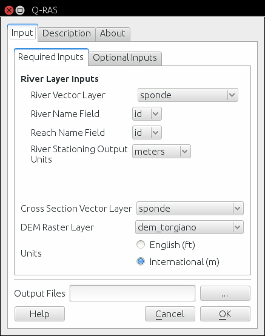

Introduction¶
Q-RAS Plugin is a preprocessing for geometry preparation in HEC-RAS.
The main dialog is
{kind=link}
The steps to using Q-RAS Plugin are fairly simple:
Load in QGIS a Digital Elevation Model in grid format in a projected crs
Digitize a stream network vector line from upstream do downstream
Digitize a Cross sections vector line from left overbank to righ toverbank (it’s not necessary to follow a particular order in XS digitizing as the plugin order the XS basing on the river feature)
- Digitize a vector layer for banks. The layer should have two geometries and at least one attribute field.
The value of left is for the left bank and the value of right is fo the right one. left and right are keyword for the plugin. User have to use them to correct identify the banks. Take a look to the figure below

Attribute table for a bank layer. The field name ripa contain the value of left and right.
- Digitize a vector layer for flowlines folloging the same criteria for banks.
- Designate where to store your new geometry file

Data used by QRAS plugin.
- press OK
- Open HEC-RAS and enjoy